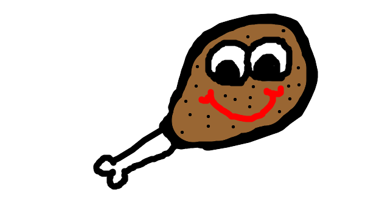

Caysi's Culilnary College, better known as CCC, is a college for those to enjoy eating. If you look around, you will see a million institutions devoted to people to enjoy creating in food. Here at CCC, we take the focus away from the preparation of cuisine, and put a focus on the taste of cuisine.
The mission of CCC is to expand your culinary horizons. We give students a taste of all foods, of all cultures. We believe that the key to a good collegiate experience is good food.
"With my copious fortune, I plan to fund a school with a passion for education in the art that is food. I would like students to be able to experience the culture of other countries, simply from the food that they eat." -Caysi Lewis (founder)
If you attend Caysi's Culinary College, we not only guarantee that you will better appreciate cuisine from around the world, but appreciate the significance of food in general.
Caysi Lewis was born in June of 1999. Throughout her lifetime she was legendary among her peers for her large appetite. She enjoyed eating family sized mozzerella sticks by herself, and taking advantage of sushi happy hour at the famous "Red Bowl." She lived to the ripe old age of 102 years old, having been alive through 3 different centuries. Legend has it that even into her hundreds, she was seen eating a whole pizza to herself. Cause of death was never determined but family friends say she died choking on a chicken bone wing. Being the philanthropist that she was, she decided to give her billion dollar fortune away to fuel her life long passion; food.
CCC places an immense amount of pride in our extracurricular activities and orginaztions. In the main quad, we have culinary related activities every weekend for our students to participate in.
All events on campus are open invite, however, please let Jon Cooper know if you plan on attending so we have a relative head count. His email address can be found on our Staff Directory, or you can visit him personally in Amond Hall, room 907.
Charlie the Chicken Wing is the proud Mascott here at CCC. Below is a picture of him cheering at the annual Chicken Wing Eating Contest.
